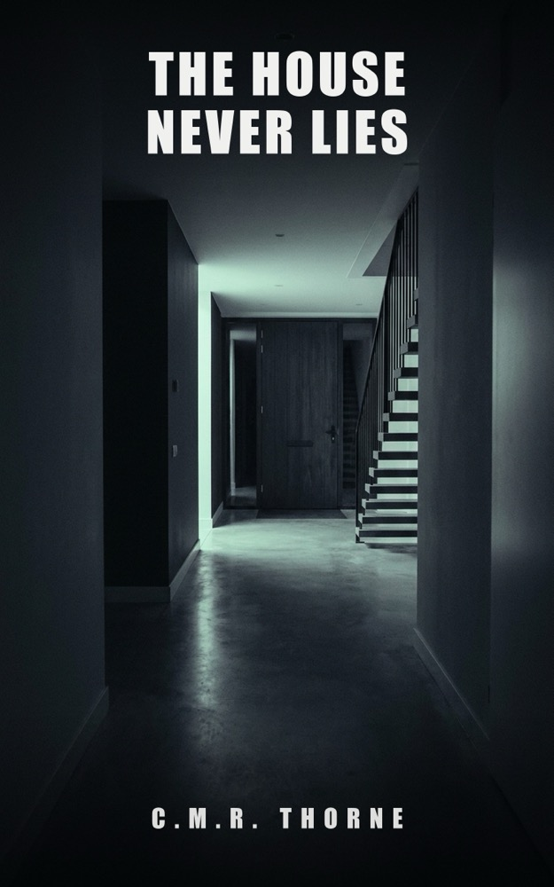

LOWLANDSPRESS
LOWLANDSPRESS

The House Never Lies
A psychological thriller
The front door opened at 3:12 a.m. While he was asleep.
Where to buy
Eight months after his wife's fatal fall, Daniel Vos is barely holding on. Then the insurance company sends him the smart-home data from that night. One line doesn't add up: the front door opened at 3:12 a.m. While he was asleep. While Marit lay at the bottom of the stairs.
The police reopen the case – and Daniel is suspect number one. Every layer he peels back reveals a new lie: Marit wasn't who she said she was. And someone in the quiet, familiar neighborhood has known for a long time.
The house recorded everything. But whoever can erase the logs can also wait – and has been watching far longer than Daniel thinks.
Product details
- Publisher
- Lowlands Press
- Language
- English
- Published
- 2026-07-10
- Pages (Hardcover)
- 320
- Words
- 86.761
- ASIN (Ebook)
- B0H8FWH2KZ
- ASIN (Paperback)
- B0H8FQ1ZHG
- ASIN (Hardcover)
- B0HHTDHH7Y
- ISBN (Paperback)
- 979-8186719328
- ISBN (Hardcover)
- 979-8171954444
Read the opening
The opening of the book, the same pages a store lets you look inside. Read on at any of the stores above.
Prologue
The house wasn't asleep.
Houses never sleep, not anymore. Somewhere in the utility closet a green light blinked, patient as a heartbeat. The sensor above the back door counted degrees. The thermostat in the hallway wrote a line every minute in a logbook nobody ever read. The house recorded everything and judged nothing, and maybe that was the problem.
At 2:41 a.m., something moved on the upstairs landing.
Bare feet on the stair runner. A hand that reached for the railing and found it. Downstairs, in the kitchen, a lamp came on for a moment – twenty percent, the night setting – and went off again. A phone lit up. Thumbs over a screen, a hesitation of eleven seconds, then four words and a send button.
The house noted: kitchen light off, 02:44.
At 2:53 a.m., the back-door sensor registered a fault.
The house didn't know the difference between accident and intent. The house noted the fault the way it noted everything, without a question mark.
What happened next, in the hallway at the bottom of the stairs, took fourteen minutes.
There was sound, but no microphone to hear it. There were two voices whispering, and then one voice that no longer did. There was a movement the hallway sensor recorded as presence, and then a fall the house recorded as nothing, because there is no sensor for falling. There was someone sitting on the fourth stair, elbows on knees, watching.
For nine minutes.
The hallway sensor wrote it all down, dutiful: motion, motion, motion. Small movements, low to the ground. Smaller each time. The house didn't know it was watching an ending. The house knew only: someone is here. And then, at 3:07 a.m.: no one here is moving anymore.
At 3:09 a.m., something in the utility closet was erased. The house noted that too – not here, but somewhere else, far away, on a server in another country. Houses remember in two places these days. Almost nobody knew that.
Then it was quiet.
For three minutes the house was alone with what lay at the bottom of the stairs, and with the green light in the utility closet, and with the thermostat that wrote its line at 3:10 a.m. like it always did: 18.5 degrees, all is well.
At 3:12 a.m., the front door opened.
Chapter 1
Eight months after his wife's death, Daniël Vos sat across from a man who knew his house better than he did.
"You have a SmartCasa system," the man said. His name was Theo Maes, he'd come on behalf of the insurance company, and he had an accent you could hear Flanders in, like gravel under a door. "Installed in 2016, expanded just last year. Thirty-eight sensors, two smart locks, one hub in the utility closet."
"If you say so."
"I don't say so. Your house says so."
They sat in the kitchen. Daniël had made coffee because you make coffee for visitors, even the ones you don't want. Maes hadn't touched his cup. He'd brought a leather folder, the kind of folder people carry when they want you to look at the folder instead of their face.
"Mr. Vos, I have to ask you a few questions about the night of March 14."
"Those questions have been asked. By the police. Twice."
"I know."
"My wife fell down the stairs. She'd taken sleep medication, it was dark, she fell. It's in the report. The case is closed."
"I know," Maes said again, in exactly the same tone, and that was the moment Daniël first felt something cold on the back of his neck. People who say I know twice usually know something else.
Maes opened the folder.
"With a payout of this size, the company runs a standard verification. Part of that is a data request to the manufacturer of your smart-home system. SmartCasa keeps a copy of all events in their own cloud. Did you know that?"
"No."
"Most people don't." Maes turned over a sheet of paper and slid it across the table. "This is the night of March 14. Every line is an event in your house."
Daniël didn't look at the paper. Not yet. "What are you looking for, Mr. Maes?"
"Nothing. That's my job: checking whether there's nothing." He tapped the sheet with one finger, twice, softly. "Except – there's something."
The sheet was a table. Times on the left, events on the right, the font of a system that never gets tired. Daniël's eyes slid down the lines the way you walk along a cliff: as close to the edge as you can get without looking down.
02:41 – motion, upstairs landing.
02:44 – kitchen light off.
Marit. That was Marit, her last round through the house, and Daniël had to wait a moment for his throat to work again. Eight months, and it still lived inside things like a table.
"I was asleep," he said. "I'd taken zolpidem. That's in the report too."
"It is, yes." Maes leaned in a little. "Take a look at 3:12."
Daniël looked.
03:12 – front door opened.
He read it again. And again. The line just stayed there, patient, the way only machines are patient.
"That's wrong," he said.
"That's what I thought too."
"No, you don't understand. It can't be right. There was no one there that night. I was asleep upstairs, Marit – my wife was lying in the hallway, my daughter was asleep. The police checked the lock. No forced entry. There was no one." He heard his own voice picking up speed and couldn't stop it. "At seven twenty I found her. The front door was deadbolted. I know because I opened it myself for the ambulance."
"At 3:12 a.m., the front door opens," Maes said. "At 3:14 it closes again and locks. No force – the how is in the detail data. I'll come back to that."
"Then your table is broken."
"Could be." Maes leaned back. For the first time he picked up his coffee, took a sip, set the cup back on exactly the same ring. "Except there's one more thing, Mr. Vos. Something that bothers me more than that front door."
Daniël waited. Outside, a car turned into the street, slowed, drove on. The sound of the Weidevenne, the kind of suburb where everyone drives slowly past everyone else's life.
"We have this data from the manufacturer's cloud," Maes said. "The police, back then, read out the hub in your utility closet. I requested that report and laid the two side by side." He set a second sheet next to the first. "This is what your hub says about the same night."
The second table was shorter.
Much shorter.
"The hub has not a single event between 2:44 and 7:21 a.m.," Maes said. "No motion in the hallway. No fault. No front door. According to the box in your utility closet, nothing happened that night at all." He looked at Daniël, and his voice went very calm, almost gentle. "A copy should match the original. When the original is emptier than the copy, someone cleaned the original. Stairs don't do that by themselves, Mr. Vos."
"What are you saying?"
"That someone was in this house that night." Maes picked up his pen. "And that someone worked very hard to erase it."